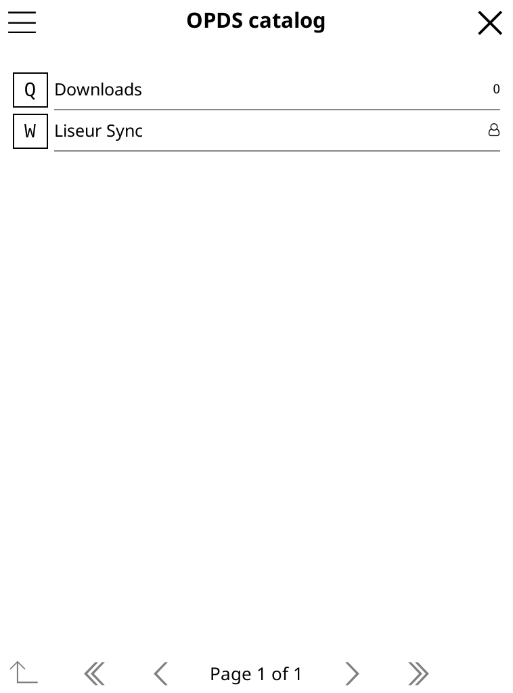
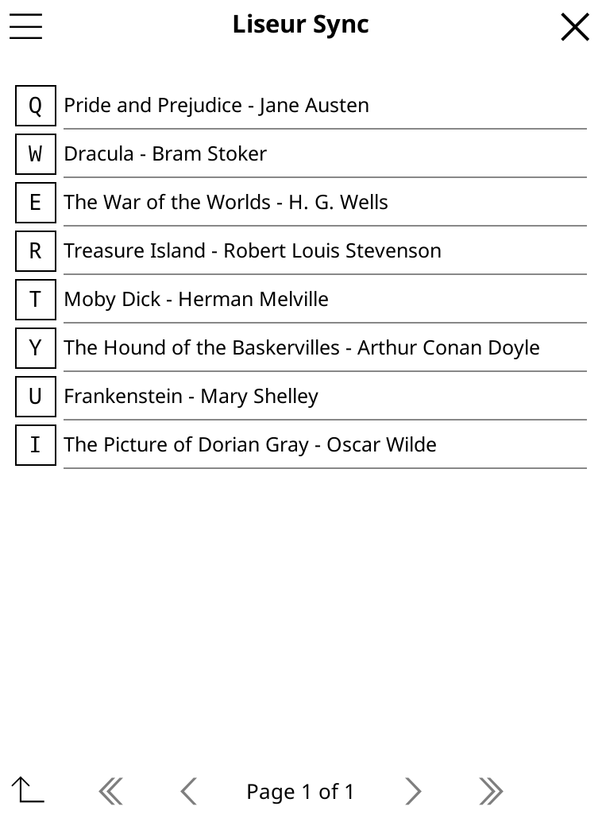

Serves the library you already have
Point it at a folder of EPUBs or at a Calibre library. The books stay where they are. The server reads them and changes a folder only if you allow uploads there.
One Go binary and a SQLite file, using about 50 MB of memory when idle. It still serves your EPUBs and audiobooks, reads them in the browser, keeps your position in step across devices and records how long you read.
Self-hosted and MIT licensed. It is the server behind Liseur, an Android reading app.

Point it at a folder of EPUBs or at a Calibre library. The books stay where they are. The server reads them and changes a folder only if you allow uploads there.
Each device adds its position to a log instead of overwriting the last one, so an old device cannot move you backwards. Positions are matched to books by their content.
Open any EPUB in the web reader. Install the site as an app to read offline, and your position, highlights and notes catch up when you reconnect.
An .m4b next to its EPUB gets a player in the reader, and the page follows the narration. Audiobookshelf can be followed as well.
Sessions from every device end up in one set of statistics, with daily totals and a calendar of the days you read.
Each account has its own positions and statistics, and folders are granted to accounts one by one. Passwords use argon2id and tokens are stored hashed.
Every device sends its position in its own way. The server keeps them together.
| Liseur for Android | The main app liseur-sync supports. It syncs positions, highlights, statistics and uploads, and connects with your username and password. See how it connects. |
|---|---|
| KOReader | Progress sync for your position, OPDS for the library and KoInsight for reading time. One download from the server sets up all three. See the setup guide. |
| CrossPoint on an Xteink | Syncs positions through the kosync API and can send reading statistics. Read the guide. |
| Your browser | The built-in reader, with offline reading once it is installed as an app. |
| Any OPDS app | Browse and download your books from apps such as Moon+ Reader, KyBook or Thorium. |
Download one file from your server, copy it into KOReader's patches folder and start KOReader. Your library, your reading position and your reading time are connected, and you never type a password on the e-reader.
The guide has screenshots of every step, taken from a real KOReader.
Open the setup guide



The installer works with Docker or rootless Podman. It sets up the database, starts the server and creates the first account.
After that, point the server at your books. Folders are read-only unless you turn on uploads for them.
# install and start the server curl -fsSL https://raw.githubusercontent.com/chmouel/liseur-sync/main/scripts/install.sh | bash # give alice a folder of books liseur-sync admin add-folder -assign alice Shelf /srv/books